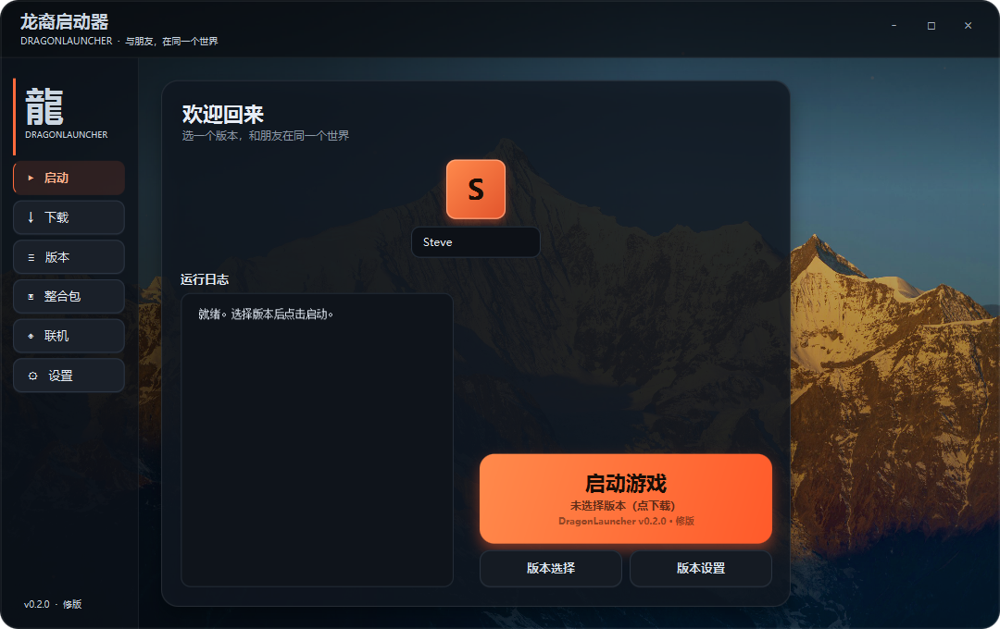

远程联机，不折腾端口
内置 Terracotta。一个人创建房间，另一个人输入房间号加入，不需要公网 IP，也不用在路由器上做端口映射。
双方需要同一个游戏版本。
FRIEND-BUILT · FOR DISTANT FRIENDS
一个为远程联机准备的 Minecraft 启动器。选版本、装整合包、开房间，剩下的交给它。

不是又一个启动器
龙裔启动器由朋友自制，原本只是给自己人用。我们把它修到能稳定下载、能启动、能开房间，再把两个版本一起放到这里。
它到底能做什么
内置 Terracotta。一个人创建房间，另一个人输入房间号加入，不需要公网 IP，也不用在路由器上做端口映射。
双方需要同一个游戏版本。
原版、Forge、Fabric、NeoForge 的库和 native 由启动器下载。首次启动会慢一点，之后直接进游戏。
依赖下载失败时会给出具体文件。
导入整合包时保留它自己的版本和模组目录，不再把共享 mods 强行搬来搬去，减少“装完却进不去”的情况。
支持常见整合包格式。
启动失败后读取本次生成的崩溃报告，定位到具体模组、Java 版本或内存问题，而不是只弹一句“启动失败”。
日志保留在安装目录的 logs 文件夹。
界面，重新做过
去掉廉价的玻璃拟态和过暗的紫色调，换成实色面板、真实摄影背景和一枚余烬橙。文字该亮的地方亮，照片该透的地方透。
下载
修版是推荐版本；朋友原版保留原样，方便对照或你自己继续改。两个压缩包都小于 50 MB。
修复下载 SSL、Java 运行时、Forge/Fabric 库与 native、联机轮询等已知问题。新界面也在这里。
下载修版1B5E7F50318E9F6561481AF08DE000607B6F1ACB5F958CE57868AFE46D250D84
朋友最初发来的安装包，未做修改。适合对照，或者你想从原始版本继续改。
原版 runtime 缺少 jdk.crypto.ec，部分网络下首次下载可能 SSL 握手失败。遇到时请换修版。
下载原版3BF80FDC55C1B8424C1809677DDD94EE74E0D4EC9CFACBCB0723A946CCDE5566
校验文件：SHA256SUMS.txt。解压后双击 DragonLauncher.exe，不要放进 C:\Program Files。
常见问题
启动器要下载所选版本的依赖库、native 和资源文件。1.20.1 的资源有几百 MB，取决于网络。下载完成后再次启动会直接进入。
建议双方都用修版，并选择完全相同的游戏版本。一个人创建房间，另一个人输入房间号。版本不一致是联机失败最常见的原因。
原版自带的精简 Java runtime 里没有 jdk.crypto.ec，在部分网络环境下无法完成 TLS 握手。修版把这个模块补上了，并增加了 Java 运行时的回退链。
这是未签名的个人项目，Windows SmartScreen 会提示。确认文件来自这个页面、SHA256 对得上，再选择“仍要运行”。
当前版本使用离线用户名启动，适合单机和朋友之间的 Terracotta 联机；暂不支持 Microsoft 账号登录，因此不能进入需要正版验证的公共服务器。和朋友玩自己的世界不受影响。
默认在启动器自己的目录下，不会写入系统目录。你可以在设置里改游戏路径；整合包和版本会跟着那个路径走。